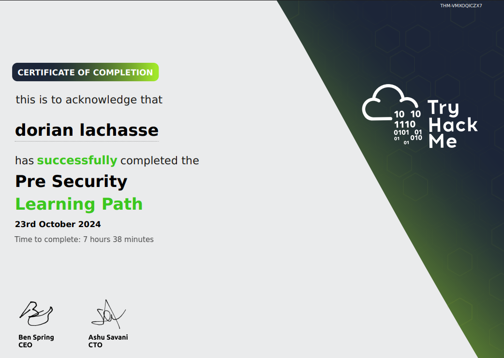

Autoformation avec TryHackMe
Contexte
Dans le cadre de mon développement professionnel, j’ai utilisé la plateforme TryHackMe afin de renforcer mes compétences en cybersécurité, en réseau, en Linux et en administration système.
Cette démarche d’autoformation me permet de progresser en autonomie, de mettre en pratique des notions vues en BTS et en entreprise, et de développer une approche plus concrète de la sécurité informatique.
Objectifs
- Développer mes compétences en cybersécurité
- Approfondir les bases réseau et Linux
- Comprendre les vulnérabilités courantes
- Pratiquer dans des environnements guidés
- Renforcer mon autonomie technique
- Valoriser ma progression professionnelle
Environnement technique
Travaux réalisés
Parcours de formation
Réalisation de parcours guidés permettant d’aborder progressivement les notions fondamentales de cybersécurité et de sécurité des systèmes.
Pratique en environnement contrôlé
Utilisation de rooms et de labs pour manipuler des services, comprendre leur fonctionnement et tester des scénarios techniques.
Renforcement des bases techniques
Approfondissement des notions liées à Linux, au réseau, aux protocoles, aux services et aux bonnes pratiques de sécurisation.
Progression personnelle
Suivi de ma progression grâce aux modules validés et aux certificats obtenus sur la plateforme TryHackMe.
Preuve de réalisation
Certificat TryHackMe
Ce certificat atteste de la réussite du parcours Pre Security Learning Path, permettant de consolider les bases nécessaires avant d’aborder des sujets plus avancés en cybersécurité.

Compétences développées
Compétences techniques
- Utilisation de Linux en environnement de formation
- Compréhension des bases réseau
- Découverte des vulnérabilités courantes
- Manipulation d’outils liés à la cybersécurité
- Analyse de scénarios techniques
Compétences professionnelles
- Autonomie dans l’apprentissage
- Organisation de ma progression
- Curiosité technique
- Maintien à jour des compétences
- Valorisation de mon parcours professionnel
Résultats obtenus
Progression
- Validation du parcours Pre Security
- Meilleure compréhension des bases cyber
- Renforcement des connaissances Linux et réseau
- Montée en compétence progressive et autonome
Impact personnel
Cette autoformation m’a permis de compléter les enseignements du BTS par de la pratique concrète, en travaillant sur des environnements proches de situations réelles.
Bilan personnel
L’utilisation de TryHackMe m’a permis de progresser à mon rythme et de développer une méthode d’apprentissage plus autonome. Cette expérience m’aide à mieux comprendre les enjeux de la cybersécurité et à renforcer mes compétences pour mon futur parcours professionnel.